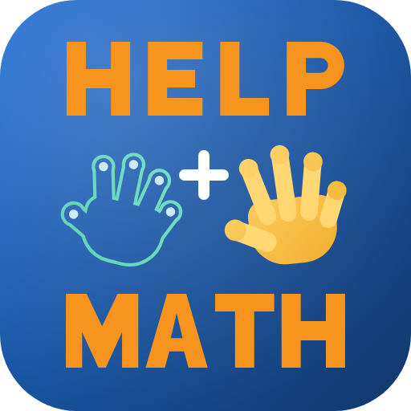
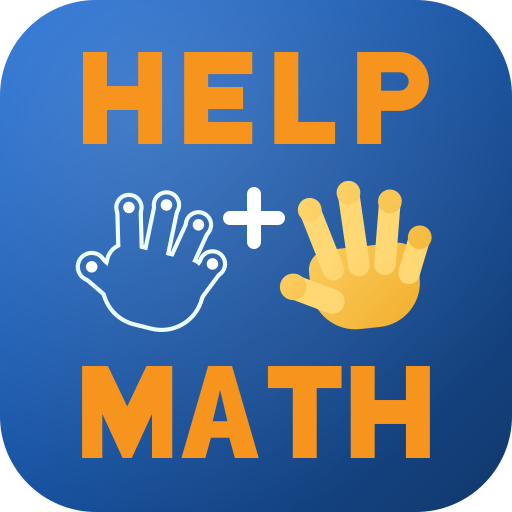

Current
Reference
Why it weakens at header size
The mint contour crosses the brighter blue portion of the field, where representative clean-edge samples fall to roughly 2.9:1.
HELP Math 2.0 identity
Version 4 rejects the washed-out pale-cyan direction. It keeps the original rich royal-blue-to-navy field and changes only the smaller outlined AI hand to a near-white mint light. The heritage orange, learner gold, white plus, background, glow, hand geometry, letterforms, spacing, and hierarchy are unchanged.

The mint contour crosses the brighter blue portion of the field, where representative clean-edge samples fall to roughly 2.9:1.

The field does not change. Only the AI contour moves to the palest end of the mint family. The weakest clean-edge AI-hand sample rises from 2.86:1 to 4.51:1 in the deterministic render and 4.57:1 in Chromium. No geometry or typography changed.
Small-size stress test
Current desktop context
Current
Rich-blue v4
Current mobile context
Current
Rich-blue v4
Candidate palette
Review boundary: this candidate exists only in the local design folder. The current header PNG, footer, favicon, Open Graph image, lesson-player branding, Git history, and public helpmath.ai site have not been changed by this redesign. The rejected pale-cyan concept is not used by this candidate.